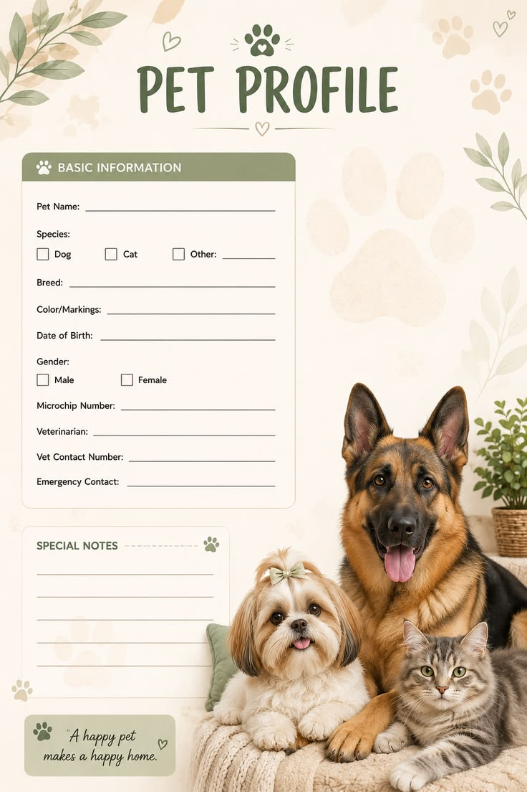

주제 발견
함께하는 일상에서 전달하고 싶은 감정을 찾고, 반려인을 위한 메시지를 정합니다.
기획부터 글, 이미지, 영상까지.
배운 것을 연결해 만든 나의 첫 AI 프로젝트.
따뜻한 시선으로 반려동물의 일상을 기록하는 콘텐츠 프로젝트입니다. 하나의 메시지를 기사, 이미지, 영상으로 확장하며 AI 콘텐츠 제작의 전체 과정을 탐구합니다.
프로젝트 결과물 보기 ↗
반려동물 라이프스타일
기획 · 글쓰기 · 비주얼 구성
한국경제 AI 교육
함께하는 일상에서 전달하고 싶은 감정을 찾고, 반려인을 위한 메시지를 정합니다.
핵심 메시지와 참고 자료를 정리하고, 매체별로 콘텐츠의 역할을 나눕니다.
AI로 초안을 탐색하고 문장과 이미지를 검토하며 일관된 분위기로 다듬습니다.
결과물과 제작 과정을 포트폴리오에 정리하고 다음 작업의 개선점을 남깁니다.
주제와 제작 과정을 담은 기획 기사
02 / IMAGE브랜드와 캠페인의 비주얼 컬렉션
03 / VIDEO30초 브랜드 필름의 임시 기획안
좋은 결과물을 만드는 일은 도구를 다루는 것에서 끝나지 않았습니다.
무엇을 전할지 정하고, 결과를 살피고, 다시 다듬는 과정에서 나만의 시선을 배웠습니다.